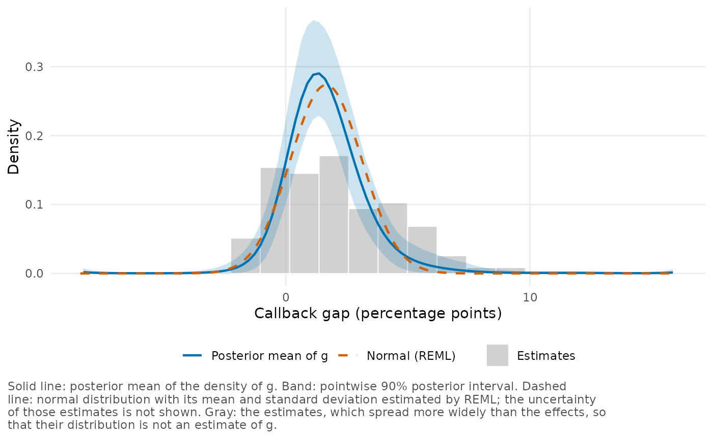
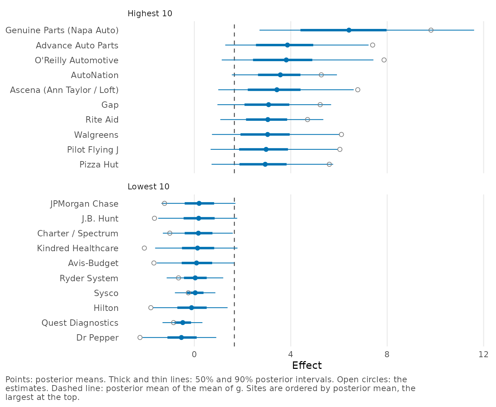
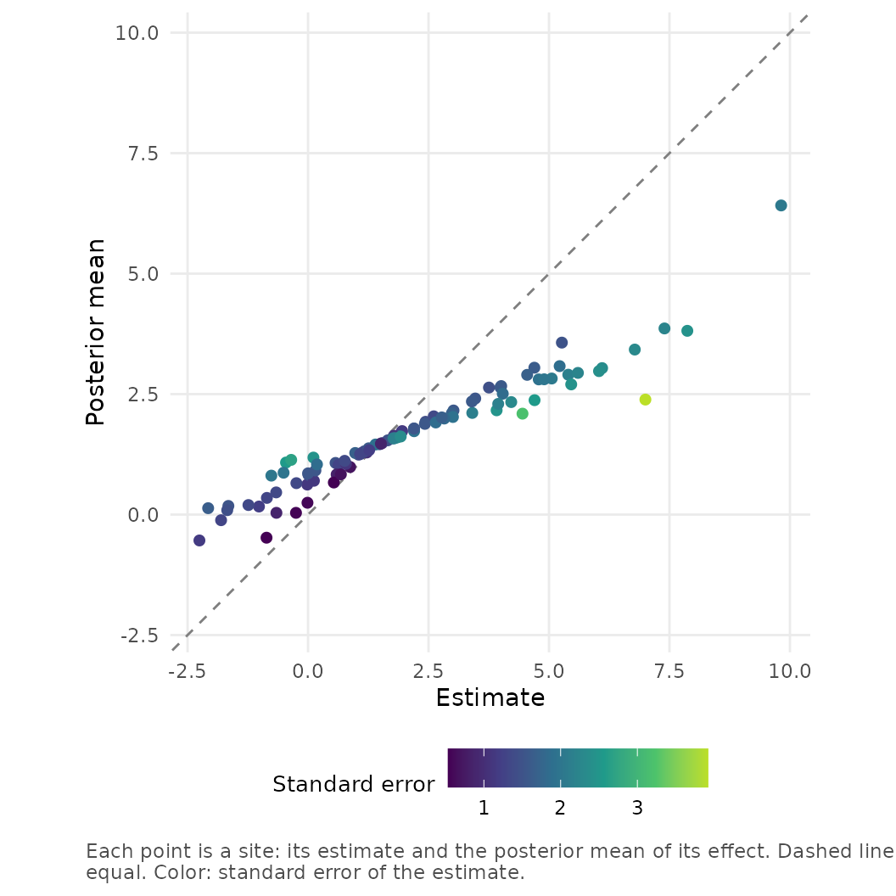
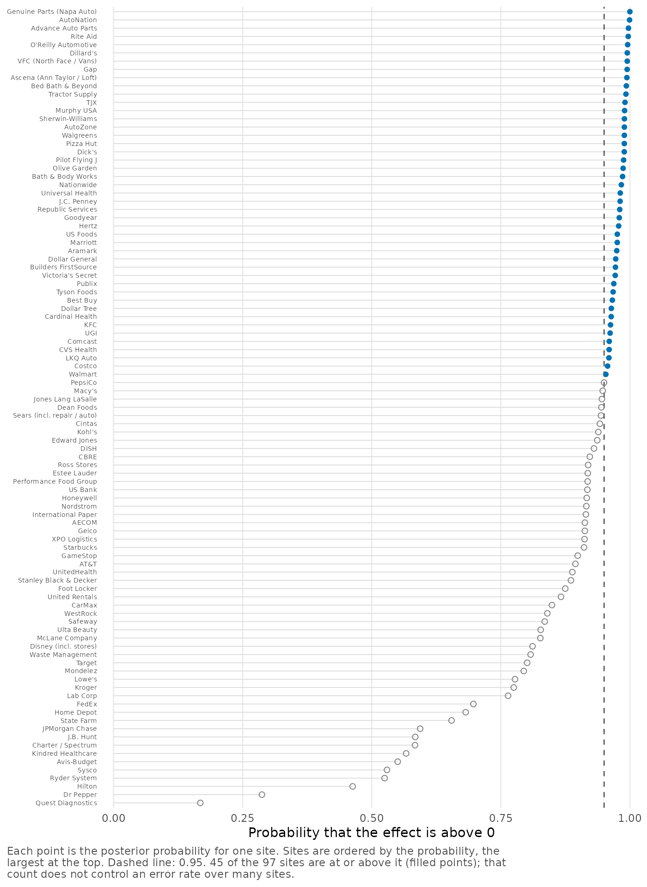

This vignette walks through a complete analysis with bayesEfron: preparing the data, fitting the model, checking the fit, and summarizing both the distribution of effects across sites and the effect at each site.
Our example is a correspondence experiment. Such an experiment sends fictitious job applications that differ only in a signal of race and records which of them are called back. Kline et al. (2022) did this at large employers in the United States. For each of the 97 firms that we analyze, the experiment gives an estimate of the gap in callback rates between applications with distinctively white and distinctively Black names, together with a standard error.
The estimates vary a lot from firm to firm, but they cannot be taken at face value as the firms’ true gaps. Part of the variation is sampling error, and some estimates are far noisier than others: the largest standard error is more than 7 times the smallest. We want to answer two questions.
- How are the true gaps distributed across firms? How large is a typical gap, and how many firms have a gap near zero, or a large one?
- What can we say about the gap at one firm once we read its noisy estimate in light of the other 96?
bayesEfron answers both questions with one model (Lee and Sui 2025). We assume that each estimate is normally distributed around the true gap of its firm, with the reported standard error, and that the true gaps are draws from a distribution \(g\). A random-effects meta-analysis assumes that \(g\) is normal. Here \(g\) can be any smooth distribution on a grid of values, in the form proposed by Efron (2016). The model is fitted by Markov chain Monte Carlo, so the result is a posterior distribution for \(g\) and for the gap at every firm.
The data
The data set krw_discrimination has one row for each of
the 97 firms. The sample follows Kline et al. (2024) and the replication code that
accompanies Walters (2024): firms with at least 40 sampled
vacancies and a callback rate of at least 3%. The estimates are based on
78,910 applications to 10,453 vacancies. See
?krw_discrimination for the sources and the estimator.
head(krw_discrimination[, c("firm_name", "yi", "sei", "n_jobs", "n_obs")])
#> firm_name yi sei n_jobs n_obs
#> 1 Rite Aid 0.046957123 0.01619358 128 962
#> 2 KFC 0.022000000 0.01530472 125 1000
#> 3 Victoria's Secret 0.042161613 0.02296031 125 931
#> 4 United Rentals 0.005708306 0.01504751 125 917
#> 5 Cardinal Health 0.034077110 0.02145421 125 974
#> 6 Charter / Spectrum -0.010182468 0.01209059 125 960Each row is a firm. bayesEfron calls the units of analysis sites, so here each site is a firm. The estimates are in two columns:
-
yiis the difference between the callback probabilities of the two groups of applications at the firm, white minus Black. A positive value favors applications with white names. -
seiis the standard error ofyi, clustered by vacancy.
These are the estimates as they come from the experiment, and no
shrinkage has been applied to them. They are differences in
probabilities, so 0.02 is a gap of 2 percentage points. We fit the model
in these units, and later pass scale = 100 to the summary
and plot functions to report the results in percentage points.
Before fitting we pass the data frame to as_bef_data(),
which finds the columns with the estimates and the standard errors by
their names and checks them. The site argument names a
column of labels. The labels are carried through the fit, so the tables
and plots below show the names of the firms.
dat <- as_bef_data(krw_discrimination, site = "firm_name")
dat
#> <bef_data>
#> Sites: 97
#> Source: data.frame
#> theta_hat: min -0.02254; median 0.01781; max 0.09817
#> sigma: min 0.005344; median 0.01581; max 0.0392
#> Names: Rite Aid, KFC, Victoria's Secret, ...Estimates can be supplied in other forms as well, which
vignette("data-input") describes.
Fitting the model
bayesEfron fits the model with CmdStan, which you can install through the cmdstanr package:
install.packages("cmdstanr",
repos = c("https://stan-dev.r-universe.dev", getOption("repos")))
cmdstanr::install_cmdstan()With the data prepared, fitting the model takes one call. We set
seed so that the fit can be reproduced.
fit <- bayes_efron_fit(dat, seed = 20250807)So that this vignette can be built without CmdStan, we load the
result from the package, where it is stored as krw_fit. To
keep the package small, krw_fit was thinned to 800 of the
12,000 posterior draws (thin = 15).
fit <- krw_fit
fit
#> <bayesEfron fit>
#> Model family: RE
#> Sites: 97
#> Grid method: pilot
#> Runtime: 0.7197 sec
#> Draws: 800 (4 chains, one iteration in 15 kept); site-level draws not kept
#> Diagnostics: Rhat 1.002; ESS bulk 1731; ESS tail 1780; divergences 0; treedepth hits 0
#> Standard errors: 0.005344 to 0.0392 (largest / smallest 7.335)
#> Grid: 101 points from -0.0829 to 0.1585; smallest standard error 2.213 grid spacings
#> Grid range: rule "pilot", not narrowed (the range of "paper_realdata"); point masses; 6 spline functions
#> Next: summary() and site_summary() for the sites, g_summary() for the distribution of effects, plot().The printed fit describes the data, the sampler and the grid. The call used the default settings:
- \(g\) is defined on a grid of 101 equally spaced values, and 6 spline functions (smooth curves) determine its shape on the grid.
- The range of the grid is chosen in two steps. First a short preliminary fit, which we call the pilot fit, is run on a wide range: the range of the estimates extended by half its width on each side. If the pilot fit shows that \(g\) occupies a narrower region, the grid is narrowed to that region plus a margin.
- Four chains are run, each with 1,000 warmup and 3,000 sampling iterations.
For these data the pilot fit did not narrow the range, so the grid
runs from -8.29 to 15.85 percentage points, as the
Grid range line shows (the output says “rule” for the
method that chooses the range). Model family: RE is the
model described above, the only one in the package. Sampling took 0.7
seconds on the computer that produced krw_fit. The grid can
affect the results, and vignette("choosing-a-grid") shows
how to check this and how to set the grid yourself. For the model in
full, see vignette("model").
Checking the fit
Before reading any results we check that the sampler has converged.
diagnose() collects the sampler diagnostics and adds checks
of the grid.
diagnose(fit)
#> <bef_diagnostic>
#> Model family: RE
#> Rhat max: 1.002 (log_g[97])
#> ESS bulk min: 1731 (lp__)
#> ESS tail min: 1780 (log_g[2])
#> Divergences: 0
#> Max treedepth hits: 0
#> E-BFMI min: 0.5682
#> Runtime: 0.7197 sec
#> Grid:
#> lower end -0.0829: at most 0% of a site's posterior in the outer 2% (site "Safeway")
#> upper end 0.1585: at most 0.1% of a site's posterior in the outer 2% (site "Genuine Parts (Napa Auto)")
#> sd of g: posterior 0.01716 (0.01183 to 0.02396); prior 0.06991 (0.05814 to 0.07644)
#> the central 99.9% of g spans 98% of the grid
#> Effective params: mean 46.67; sd 6.378The sampler diagnostics are computed from the whole run of 12,000 draws, so thinning does not affect them. All of the checks pass here: R-hat is below 1.01 for every quantity that the sampler records, the effective sample sizes are above 400, and there are no divergent transitions.
The first two Grid lines show, for each end of the grid,
the largest posterior probability that any one firm has in the outer 2%
of the range. Here it is at most 0.1%, far below the 5% that
diagnose() allows, so no firm has much of its posterior
probability at an end of the grid. The other two Grid lines
have no threshold. They compare the posterior of the standard deviation
of \(g\) with its prior on this grid,
and give the part of the grid that the central 99.9% of \(g\) spans.
vignette("diagnostics") explains how to read each line and
what to do when a check fails.
The distribution of gaps across firms
We start with the first question. confint() with
type = "g" returns the posterior mean and a 90% posterior
interval for the mean, the variance and the standard deviation of \(g\). (The columns site and
point repeat parameter and
mean.)
confint(fit, type = "g")
#> 90% posterior intervals (equal-tailed)
#> parameter mean lower upper site point
#> 1 mean_g 0.0166017761 0.0130811925 0.0206491286 mean_g 0.0166017761
#> 2 var_g 0.0003076948 0.0001399332 0.0005738865 var_g 0.0003076948
#> 3 sd_g 0.0171621568 0.0118293270 0.0239559271 sd_g 0.0171621568We estimate the mean gap across firms to be 1.66 percentage points (90% interval 1.31 to 2.06), and the standard deviation of the gaps to be 1.72 points (1.18 to 2.40). This standard deviation lies between two other numbers that are sometimes mistaken for it:
- The standard deviation of the 97 estimates is 2.43 points. It is larger because the estimates include sampling error.
- The standard deviation of the firms’ posterior means, which are shown in the next section, is 1.08 points. It is smaller because each posterior mean is pulled toward the center.
To see the shape of \(g\) we plot it
with plot_g(). We add a histogram of the estimates and, for
comparison, the normal distribution of a random-effects model.
plot_g(fit, observed = "histogram", normal = TRUE, scale = 100) +
ggplot2::labs(x = "Callback gap (percentage points)")
The solid curve is the posterior mean of the density of \(g\). The band around it is pointwise: at each value it contains the density with posterior probability 0.9, but it is not a band for the whole curve at once. The histogram shows the estimates, which are more spread out than the gaps. The dashed curve is the normal distribution of a random-effects model fitted to the same estimates by restricted maximum likelihood (REML). It has no band because it treats the estimated mean and variance as known.
The two curves agree about the center but differ in shape. The estimate of \(g\) is more peaked and has a longer right tail. For example, it puts a probability of 0.034 on gaps above 5 percentage points, whereas the normal curve puts 0.011 there. However, with 97 firms the band is wide in that tail, and the 90% interval for this probability goes down to 0.004. So the plot is not evidence that the gaps are non-normal. It shows what the data allow when normality is not assumed.
Statements about proportions of firms also come from \(g\), and g_summary() computes
them with posterior intervals. With type = "prob" it
returns the probability that a firm’s gap lies in a given range, and
with type = "quantile" it returns quantiles of \(g\).
g_summary(fit, type = "prob", lower = 0.02)
#> from to mean lower upper
#> 1 0.02 Inf 0.3641116 0.2582442 0.4805717
g_summary(fit, type = "prob", upper = 0)
#> from to mean lower upper
#> 1 -Inf 0 0.1245112 0.06335606 0.1916327
g_summary(fit, type = "quantile", probs = c(0.1, 0.5, 0.9), scale = 100)
#> prob mean lower upper
#> 1 0.1 -0.1602722 -0.6278007 0.2739055
#> 2 0.5 1.5080321 1.1318371 1.9253976
#> 3 0.9 3.6474761 2.9043495 4.7937459The probability that a firm’s gap exceeds 2 percentage points is 0.36
(90% interval 0.26 to 0.48). The probability that a firm’s gap is below
zero, so that the firm favors applications with Black names, is 0.12
(0.06 to 0.19). The quantiles are in percentage points because we set
scale = 100. We estimate that 10% of the firms have gaps
below -0.16 points, half have gaps below 1.51, and 10% have gaps above
3.65.
The gap at each firm
We now turn to the second question. site_summary()
returns a data frame with one row for each firm. It contains the
estimate and its standard error as they were supplied, and the mean, the
standard deviation and a 90% posterior interval for the gap. With
threshold = 0 it adds a column, prob_above,
with the posterior probability that the gap is above zero, which we come
back to below. Here we print three firms chosen by their standard errors
alone: the smallest, the median and the largest.
sites <- site_summary(fit, threshold = 0, scale = 100)
by_precision <- order(sites$se)[c(1, 49, 97)]
sites[by_precision, c("label", "estimate", "se", "mean", "sd", "lower", "upper")]
#> label estimate se mean sd lower
#> 29 Quest Diagnostics -0.8616163 0.534379 -0.4794688 0.4968573 -1.32080742
#> 11 J.C. Penney 3.0181087 1.581008 2.1602438 1.1208334 0.40936330
#> 65 Walmart 7.0000000 3.919826 2.3868227 1.7444759 0.04493205
#> upper
#> 29 0.3356499
#> 11 4.0891073
#> 65 5.5232668All columns are in percentage points. Quest Diagnostics has the most precise estimate, and its posterior mean is 0.38 points from that estimate. At the other extreme, Walmart has an estimate of 7.00 points with a standard error of 3.92, and its posterior mean is 2.39. An estimate this noisy carries little information, so the posterior mean is determined largely by the other firms.
A plot of the posterior means and intervals of all 97 firms would be
long, so we ask plot_sites() for the 10 firms with the
largest and the 10 with the smallest posterior means
(n_extreme = 10).
plot_sites(fit, n_extreme = 10, scale = 100)
The open circles are the estimates, so the distance from a circle to its point is the shrinkage for that firm. The firm with the largest posterior mean is Genuine Parts (Napa Auto), at 6.41 points compared with an estimate of 9.82.
To look at the shrinkage of all 97 firms at once we use
plot_shrinkage(), which plots each posterior mean (vertical
axis) against its estimate (horizontal axis).
plot_shrinkage(fit, scale = 100)
A firm on the dashed diagonal would have a posterior mean equal to its estimate. The points farthest from the diagonal have large standard errors, which are shown in the lighter colors. In a normal model, every estimate is shrunk toward a common mean by a fraction that depends only on its standard error. Here the amount of shrinkage also depends on where the estimate lies relative to \(g\).
The posterior standard deviation of each firm reflects two sources of
uncertainty, and site_summary() returns a column for each.
sd_given_g is what the standard deviation would be if \(g\) were known, and sd_about_g
is what the uncertainty about \(g\)
adds. In these data the second source accounts for a median of 2.3% of a
firm’s posterior variance.
Probability of a positive gap
A common question about a single firm is whether its gap is above
zero. exceedance_prob() returns the posterior probability
of this for every firm (the prob_above column of the table
above has the same numbers). Below we print the four largest
probabilities and count the firms with a probability of at least
0.95.
p_positive <- exceedance_prob(fit)
round(head(sort(p_positive, decreasing = TRUE), 4), 3)
#> Genuine Parts (Napa Auto) AutoNation Advance Auto Parts
#> 1.000 0.999 0.997
#> Rite Aid
#> 0.997
sum(p_positive >= 0.95)
#> [1] 45plot_exceedance() shows every firm’s probability, sorted
from the largest to the smallest.
plot_exceedance(fit, cutoff = 0.95)
For 45 of the 97 firms the probability of a positive gap is at least 0.95. A count like this needs three caveats.
- Each probability is a statement about one firm. The 45 firms are not a list with a controlled false discovery rate.
- The probability is about a gap above zero and not about the size of
the gap. To ask about gaps above some other value, set
threshold, for exampleexceedance_prob(fit, threshold = 0.02). - The count depends on the grid. In fits of the same data with all
12,000 draws, the count is 45 with the default grid, 53 with a range
that extends a quarter of the width beyond the estimates, and 51 with 8
spline functions. See
vignette("choosing-a-grid")for how to check this for your own data.
Predicting the gap at a new firm
The estimate of \(g\) also tells us
about a firm that was not in the experiment, provided that the firm can
be regarded as one more draw from the same population of large firms.
predict() draws the gap of such a firm from \(g\), and the draws include the uncertainty
about \(g\).
theta_new <- predict(fit, seed = 1)
quantile(100 * theta_new, c(0.05, 0.5, 0.95))
#> 5% 50% 95%
#> -0.8055305 1.3672701 4.5057598The middle 90% of the draws runs from -0.8 to 4.5 percentage points.
If the new firm has been studied, we can supply its estimate and
standard error as newdata, and predict() then
returns posterior summaries of its gap. Here we give the same estimate
of 5 percentage points with two different standard errors.
predict(fit, newdata = data.frame(estimate = c(0.05, 0.05), se = c(0.01, 0.03)))
#> estimate se mean sd lower upper mode
#> 1 0.05 0.01 0.04157138 0.009837535 0.025773501 0.05821434 0.04022915
#> 2 0.05 0.03 0.02291722 0.015207284 0.001026362 0.05025402 0.01850115The same estimate leads to different conclusions at the two levels of precision. Each row treats its firm as a single new firm: the summaries are those that the firm would have if it were added to the 97 and the model were fitted again.
Both uses of predict() describe firms like those in the
sample, which were selected for their size and their number of
vacancies. Neither is a forecast for employers in general.
More about the fitted object
summary(fit) prints the posterior means of the three
summaries of \(g\), the diagnostics,
and the first and last rows of the table of site effects. To get that
table for all the firms as a data frame, use
as.data.frame():
as.data.frame(fit)[1:3, c("site", "label", "mean", "sd", "lower", "upper")]
#> site label mean sd lower upper
#> 1 1 Rite Aid 0.03048175 0.01296795 0.010775168 0.05349968
#> 2 2 KFC 0.01786494 0.01052594 0.001227187 0.03581179
#> 3 3 Victoria's Secret 0.02334782 0.01384900 0.002864899 0.04801767The fit is a list that contains the draws, the data, the grid and the
settings. See ?bef_fit for its components and the available
methods.
Where to go next
-
vignette("plots")shows all the plots in the package, including the ones used here. -
vignette("twin-towers")repeats these steps on simulated data, for which the true effects are known. -
vignette("empirical-bayes")compares the results for these 97 firms with those from empirical Bayes methods.